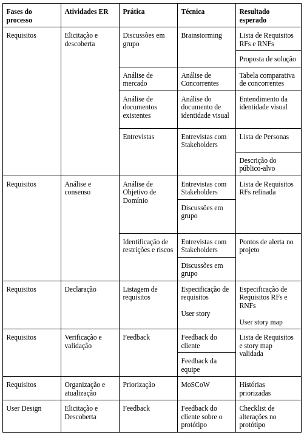

Engenharia de Requisitos
Atividades e Técnicas de ER
A Engenharia de Requisitos (ER) desempenha um papel crucial no desenvolvimento de software, garantindo que o produto final esteja alinhado com as necessidades dos usuários e da organização. Ela serve como a base fundamental para todo o processo de desenvolvimento. De acordo com MARSICANO (2025), a ER compreende seis atividades principais: Elicitação e Descoberta, Análise e Consenso, Declaração, Representação, Verificação e Validação, e Organização e Atualização.
No contexto do Rapid Application Development (RAD), que é iterativo e incremental, o foco está na prototipagem rápida e no feedback contínuo do cliente. Diferentemente dos modelos tradicionais, no RAD, as atividades de ER são integradas e revisitadas em todas as suas fases, adaptando-se à natureza dinâmica do processo.
Fase de Levantamento de Requisitos (Requirements Planning)
Nesta fase, o objetivo principal é estabelecer o escopo do projeto, compreender os objetivos de negócio, identificar os stakeholders-chave e coletar os requisitos de alto nível.
Elicitação e Descoberta
- Entrevistas com Stakeholders: Realizar entrevistas com proprietários, usuários, gestores e outros envolvidos para entender as necessidades, expectativas e desafios relacionados ao aplicativo CanadaWay. Por exemplo, entender as dificuldades dos usuários em encontrar informações sobre programas específicos.
- Brainstorming: Realizar sessões de brainstorming para gerar uma ampla gama de requisitos e soluções criativas. Isso pode incluir ideias para gamificação, design da interface, e funcionalidades específicas para diferentes perfis de clientes.
- Análise de Documentos Existentes: Revisar documentos como materiais de marketing, informações sobre programas e feedbacks de clientes anteriores, para identificar requisitos e informações relevantes.
- Análise da Concorrência (Benchmarking): Analisar as plataformas de outras empresas de intercâmbio para identificar boas práticas, funcionalidades inovadoras e áreas onde o CanadaWay pode se destacar.
- Identificação de Stakeholders: Listar os stakeholders do projeto e suas respectivas expectativas e necessidades. Isso ajuda a garantir que todos os envolvidos sejam considerados no processo de desenvolvimento.
Análise e Consenso
- Entrevista com Stakeholders: A análise de objetivo de domínio envolve entender as metas principais e o que se espera alcançar com o projeto. Realizam-se discussões em grupo com os stakeholders para analisar os requisitos, resolver conflitos, esclarecer ambiguidades e garantir que todos os envolvidos tenham um entendimento comum dos objetivos e escopo do projeto.
- Identificação de Restrições e Riscos: Identificar restrições de tempo, orçamento e recursos, bem como potenciais riscos que podem afetar o projeto. Isso pode incluir a análise de riscos técnicos e de usabilidade.
Declaração
- Documentação Inicial dos Requisitos: Registrar os requisitos iniciais de forma clara e acessível, utilizando listas, atas de reunião, ou documentos simples. O objetivo é capturar as ideias e necessidades de alto nível sem formalismos excessivos
- Mapeamento de Histórias de Usuário (User Story Map): No desenvolvimento ágil, como o RAD (Rapid Application Development) adotado para o projeto CanadaWay, as histórias de usuário são uma forma concisa de expressar os requisitos do ponto de vista do usuário final. Elas seguem um formato simples: Como [tipo_de_usuário], quero [ação], para [benefício].
Organização e Atualização
- Priorização MoSCoW: Utilizar a técnica MoSCoW (Must have, Should have, Could have, Won't have) para priorizar os requisitos coletados, garantindo que as funcionalidades essenciais sejam desenvolvidas primeiro. Por exemplo, definir quais funcionalidades são "Must have" para o MVP.
Verificação e Validação
- Revisão Inicial dos Requisitos: Realizar uma revisão inicial dos requisitos documentados com os stakeholders para garantir que eles reflitam suas necessidades e expectativas. Isso pode envolver a realização de workshops de revisão.
- Feedback do Cliente e da Equipe: OColetar feedback inicial sobre os requisitos para identificar possíveis lacunas, erros ou ambiguidades. O feedback pode ser obtido através de questionários, reuniões quinzenais ou discussões informais.
- Critério de Prontidão (DoR): Cada requisito deve ser claro, conciso e bem definido, idealmente no formato de "História de Usuário". Devem existir critérios de aceitação claros e documentados para cada requisito, e a equipe e os stakeholders devem ter um entendimento comum validado, seja por meio de discussões, revisões conjuntas ou outros métodos. Além disso, cada requisito precisa ter sua prioridade definida (MoSCoW), dependências identificadas, recursos planejados e uma estimativa inicial de esforço, garantindo que esteja verdadeiramente "pronto" para ser trabalhado pela equipe.
Fase de Prototipagem (User Design)
O foco principal nesta fase é desenvolver O foco principal nesta fase é desenvolver protótipos funcionais rapidamente e iterar com base no feedback contínuo do cliente. O objetivo é criar representações tangíveis do sistema que permitam a validação dos requisitos e a coleta de insights valiosos para o refinamento do projeto.
Elicitação e Descoberta
- Demonstração e Feedback Iterativo de Protótipos: Apresentar protótipos iniciais aos stakeholders para coletar feedback, identificar necessidades, requisitos emergentes e realizar ajustes baseados na interação direta dos usuários em sessões estruturadas.
Análise e Consenso
- Discussões do Feedback do Cliente: Analisar o feedback coletado e promover discussões para identificar os principais pontos de melhoria e os ajustes necessários.
- Resolução de Conflitos e Esclarecimento de Ambiguidade: Abordar quaisquer conflitos ou ambiguidades nos requisitos levantados durante a fase de prototipagem para garantir um entendimento comum entre todos os stakeholders.
Declaração
- Documentação Detalhada dos Requisitos: Registrar os requisitos emergentes de forma clara e específica, utilizando User Stories e critérios de aceitação para garantir que todos os detalhes sejam capturados.
Representação
- Protótipos Funcionais de Alta Fidelidade: Desenvolver protótipos com diferentes níveis de detalhe, desde wireframes simples até mockups interativos, para representar os requisitos visuais e funcionais, que evolui com o feedback e as iterações
Verificação e Validação
- Testes de Usabilidade: Realizar testes com usuários reais para avaliar a facilidade de uso do protótipo e identificar problemas de navegação ou interação.
- Feedback do Cliente: Revisar formalmente o protótipo com o cliente para alinhar expectativas e necessidades. Coletar feedback imediato em demonstrações e testes para ajustes rápidos e correta interpretação dos requisitos
Organização e atualização
- User Story Mapping: Utilizar o User Story Mapping para organizar e visualizar os requisitos emergentes em relação ao fluxo do usuário no sistema, facilitando a compreensão e o planejamento do desenvolvimento
Fase de Implementação (Construção)
Nesta fase, o sistema é desenvolvido com base nos protótipos validados.
Análise e Concenso
- Discussões com desenvolvedores: Utilizadas para esclarecer detalhes de requisitos que surgem durante a codificação, resolver ambiguidades encontradas na prática e adaptar requisitos de forma ágil conforme o desenvolvimento avança.
Fase de Implantação e Entrega (Cutover)
Nesta fase, o foco é a implantação do sistema no ambiente de produção e a garantia de que ele atenda às expectativas do cliente.
Verificação e Validação
- Testes de Aceitação pelo Cliente: Realizados para confirmar se o sistema final atende a todos os requisitos e expectativas do cliente.
- Coleta de feedback do usuário: Utilizada para identificar oportunidades de melhoria e problemas que possam surgir após a implantação.
Organização e Atualização (Feedback Pós-Implantação)
- Análise de problemas e sugestões: ealizada para planejar futuras iterações e atualizações do sistema, garantindo a sua evolução contínua
Engenharia de Requisitos e o RAD
